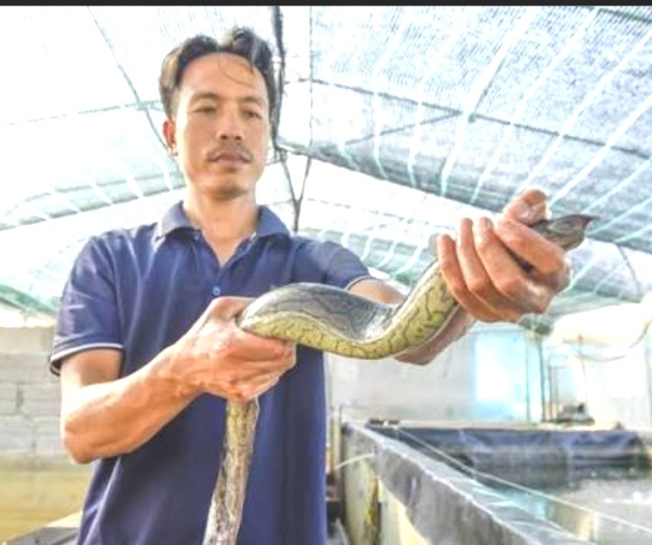
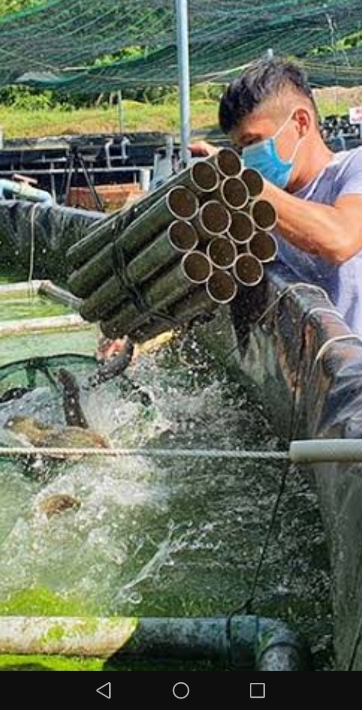
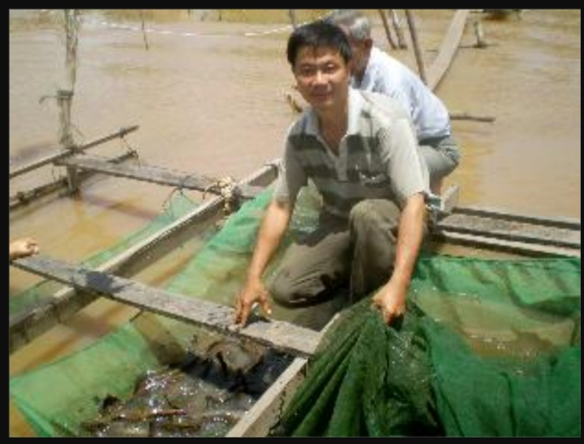
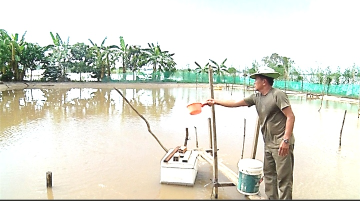
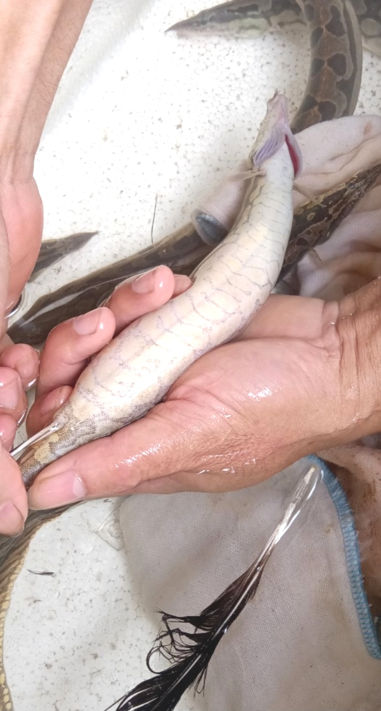
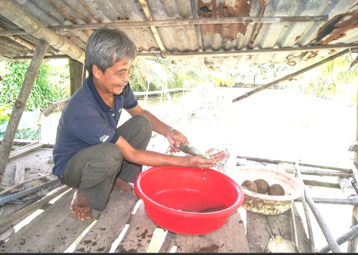
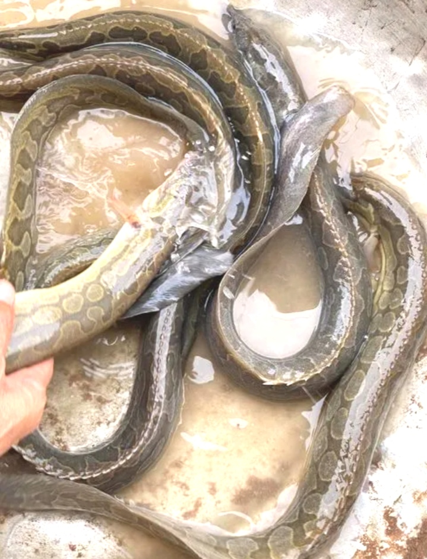

Kỹ Thuật Nuôi Cá Chạch Lấu Thương Phẩm Trong Bể Bê Tông, Lồng Bè Và Ao Đất Cho Hiệu Quả Kinh Tế Cao
Cá chạch lấu (tên khoa học: Mastacembelus armatus) là loài cá nước ngọt đặc sản có giá trị kinh tế hàng đầu hiện nay. Thịt cá chạch lấu thơm ngon, giàu đạm, vẩy mịn chắc thịt và không có xương dăm, được thị trường tiêu thụ cực kỳ ưa chuộng với mức giá thu mua luôn ở mức cao định hình từ 250.000đ – 400.000đ/kg.

Hình 1: Cận cảnh cá chạch lấu thương phẩm đạt trọng lượng tiêu chuẩn 300g - 500g/con.
Nhờ tiến bộ kỹ thuật trong khâu cho sinh sản nhân tạo và thuần hóa thức ăn, mô hình nuôi cá chạch lấu thương phẩm đã mở rộng thành công trên 3 hình thức chính: nuôi bể bê tông/lót bạt, nuôi lồng bè trên sông và nuôi ao đất thâm canh. Cẩm nang chuyên sâu dưới đây sẽ cung cấp toàn bộ quy trình thực chiến giúp bà con chăn nuôi kiểm soát tối đa dịch bệnh và đạt tỷ suất lợi nhuận cao nhất.
💡 Cơ chế sinh lý và tập tính sinh thái đặc thù của cá chạch lấu:
Cơ quan hô hấp phụ (Ruột và Da): Khác với các loài cá thông thường, cá chạch lấu có khả năng hô hấp phụ qua lớp da nhầy giàu mạch máu và niêm mạc ruột. Điều này giúp cá chịu đựng được môi trường oxy thấp tạm thời, nhưng lại khiến cá cực kỳ nhạy cảm với phèn chua, kim loại nặng và hóa chất sát trùng tẩy rửa mạnh.
Tập tính né ánh sáng (Negative Phototaxis): Ban ngày cá chạch lấu thích chui rúc vào các bó ống nhựa, nếp lưới để trú ẩn. Ban đêm hoặc khi ánh sáng yếu cá mới tích cực bơi ra ngoài tìm thức ăn.
Phản ứng với độ đục của nước: Nước bùn phù sa lơ lửng quá nhiều sẽ làm nghẽn nếp mang và bám vào chất nhầy trên da cá, khiến cá bị cay mắt, tróc da và nhiễm nấm thủy mi cấp tính.
1. Kỹ Thuật Thiết Kế Hạ Tầng 3 Mô Hình Nuôi Cá Chạch Lấu Thực Chiến
a. Mô hình nuôi cá chạch lấu trong bể bê tông / bể lót bạt
Diện tích bể tiêu chuẩn: 15 m² – 30 m² / bể. Thiết kế bể hình vuông bo góc hoặc hình chữ nhật.
Mực nước & Thành bể: Thành bể cao 1.2 m – 1.5 m; mực nước cấp cố định từ 0.8 m đến 1.0 m.
Ống xả Xi-phông: Đáy bể tô láng mịn, làm độ dốc 3% - 5% nghiêng về hố xả rốn trung tâm Ø90 mm để rút toàn bộ phân cá và cặn bã hàng ngày.

Hình 2: Hệ thống bể bê tông nuôi cá chạch lấu
b. Mô hình nuôi cá chạch lấu trong lồng bè trên sông, hồ chứa
Vị trí đặt lồng: Nơi có dòng chảy nhẹ (0.2 – 0.4 m/s), nước trong sạch, xa khu vực xả thải công nghiệp.
Kích thước lồng: Lồng tiêu chuẩn 3m x 4m x 2.5m. Lưới PE không gút, cỡ mắt lưới 0.5 cm – 2.0 cm tùy cỡ cá.

Hình 3: Mô hình nuôi cá chạch lấu lồng bè trên sông cho tốc độ lớn nhanh nhờ nguồn nước lưu thông liên tục.
c. Mô hình nuôi cá chạch lấu trong ao đất thâm canh
Diện tích ao: Từ 500 m² đến 2.000 m², độ sâu mực nước từ 1.2 m – 1.5 m.
Cải tạo ao: Tát cạn, sên vét bùn đáy (chỉ giữ lại 10 cm bùn), rải vôi $CaCO_3$ liều lượng 10 – 15 kg/100m² phơi ải 7 ngày trước khi cấp nước qua lưới lọc mịn.

Hình 4: Ao đất nuôi cá chạch lấu cần trang cụm giá thể tre/ống nhựa và dàn quạt nước cấp oxy.
2. Bảng Thông Số Môi Môi Trường Nước Vàng Và Mật Độ Thả Giống
Thông số kỹ thuật
Ngưỡng tối ưu
Ngưỡng nguy hiểm
Giải pháp cân bằng thực chiến
Nhiệt độ nước
26°C – 30°C
< 20°C hoặc > 33°C
Che lưới lan chống nắng, nâng mực nước bể khi nắng nóng.
Độ pH
7.0 – 8.2
< 6.0 hoặc > 9.0
Tạt vôi nông nghiệp $CaCO_3$ (10-20g/m³) khi pH hạ thấp.
Oxy hòa tan (DO)
> 4.5 mg/L
< 2.5 mg/L
Bật máy sục khí đĩa xốp dai 24/24h liên tục.
Độ kiềm (Alkalinity)
80 – 150 mg/L $CaCO_3$
< 50 mg/L
Bổ sung $NaHCO_3$ (15-20g/m³) định kỳ hàng tuần.
Khí độc $NH_3$ / $NO_2^-$
$NH_3$ < 0.01 mg/L $NO_2^-$ < 0.05 mg/L
> 0.05 mg/L
Xi-phông đáy 100%, thay 30% nước sạch, tạt vi sinh $Bacillus\ subtilis$.
Ao đất thâm canh (Size > 8 cm): Thả 15 – 25 con/m².
3. Kỹ Thuật Cho Sinh Sản Nhân Tạo Và Ươm Giống Cá Chạch Lấu
Chủ động nguồn giống nhân tạo là chìa khóa giúp hạ chi phí đầu vào và đảm bảo cá không mang mầm bệnh từ tự nhiên.
Chọn cá bố mẹ: Cá chạch lấu bố mẹ đạt 2 - 3 năm tuổi, trọng lượng từ 400g - 800g/con. Cá cái bụng to mềm, lỗ sinh dục hồng; cá đực thân thon dài, vây sẫm màu.
Kích thích sinh sản: Sử dụng não thùy thể phối hợp với hCG hoặc LRHa + Domperidone để tiêm kích thích rụng trứng cho cá bố mẹ.
Ấp trứng & Ươm con giống: Trứng cá chạch lấu là dạng trứng dính, được vuốt ấp trên các vạt lưới nilon trong bể sục khí liên tục. Sau 48 - 60 giờ trứng nở thành cá bột.

Hình 5: Kỹ thuật vuốt trứng và thu tinh dịch cho sinh sản nhân tạo cá chạch lấu tại cơ sở giống.
4. Quy Trình Chăm Sóc Kỹ Thuật Cho Cá Chạch Lấu Ăn
Khẩu phần và kỹ thuật cho ăn quyết định tốc độ lớn và hệ số chuyển đổi thức ăn (FCR) của cá chạch lấu.

Hình 6: Người nuôi kiểm tra sức ăn của cá chạch lấu trên sàn ăn định kỳ hàng ngày.
5. Phác Đồ Điều Trị Các Bệnh Phổ Biến Nhất Trên Cá Chạch Lấu

Hình 7: Biểu hiện cá chạch lấu bị bệnh lở loét xuất huyết da do vi khuẩn Aeromonas tấn công.
a. Bệnh Lở Loét, Xuất Huyết Thân Do Vi Khuẩn (Aeromonas hydrophila)
Dấu hiệu: Thân cá xuất hiện đốm đỏ, tróc nhớt, vết loét ăn sâu vào cơ thịt. Cá bỏ ăn, bơi lờ đờ sát mặt nước.
Phác đồ điều trị (5 - 7 ngày): - Ngày 1: Thay 30% nước bể. Tạt sát trùng **Iodine 90%** (1.5 ml/m³ nước) vào lúc 9h sáng.
- Ngày 2 - 6: Trộn kháng sinh **Oxytetracycline** (5g/kg thức ăn) hoặc **Doxycycline** (3g/kg thức ăn) + **Vitamin C** (5g/kg) cho ăn liên tục 5 ngày.
b. Bệnh Nấm Thủy Mi (Saprolegniasis)
Dấu hiệu: Trên da và mang cá xuất hiện các búi tơ màu trắng xốp như chùm bông gòn. Cá ngứa ngáy cọ mình vào giá thể.
Phác đồ điều trị: Tạt **Bronopol** (1 ml/m³ nước) hoặc đánh kết hợp **Muối hột 2kg/m³** + **Xanh Methylene (2g/m³)**. Đánh 2 liều cách nhau 48 giờ.
c. Bệnh Đường Ruột Phân Trắng
Dấu hiệu: Bụng cá sưng to, xả phân trắng nổi trên mặt nước.
Phác đồ điều trị: Cắt mồi 1 ngày. Trộn **Trimethoprim + Sulfamethoxazole** (5g/kg thức ăn) + Tỏi tươi giã lấy nước (10ml/kg) cho ăn 5 ngày.
6. Thu Hoạch Và Tối Ưu Hóa Tỷ Suất Lợi Nhuận Thương Phẩm
Sau 8 – 10 tháng nuôi, cá chạch lấu đạt trọng lượng thương phẩm từ 250g – 500g/con (2 – 4 con/kg). Cắt mồi trước 24 - 36 giờ, xả bớt 50% nước bể, rút giá thể ra ngoài và kéo gom cá bằng lưới mềm để tránh làm trầy xước da cá.
Đồng hành cùng phát triển chăn nuôi bền vững: Quý trang trại và bà con nông dân cần hỗ trợ tư vấn thiết kế hạ tầng, tính toán công thức đạm hoặc phác đồ trị bệnh cấp tính trên cá chạch lấu, vui lòng bấm nút Zalo bên dưới để kết nối trực tiếp với chuyên gia.